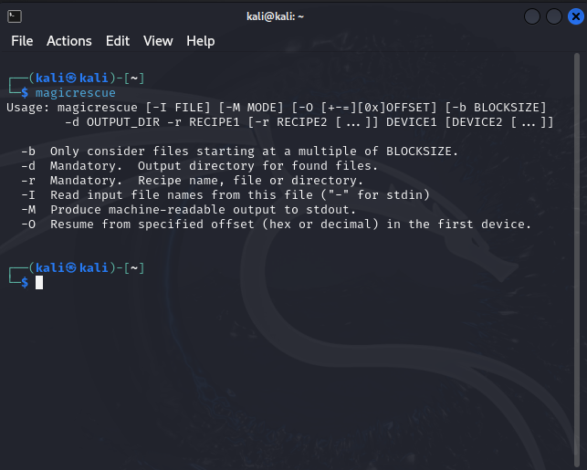
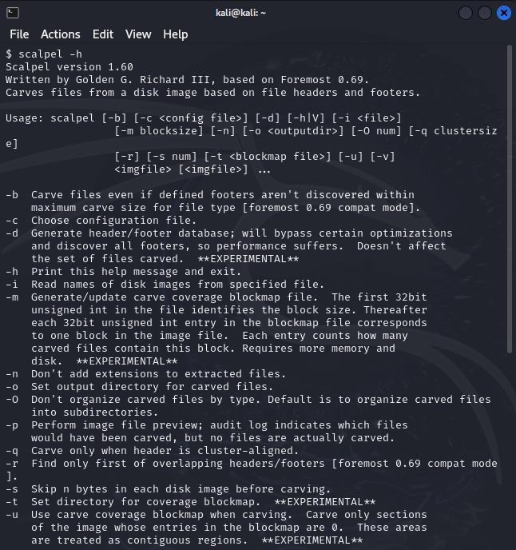
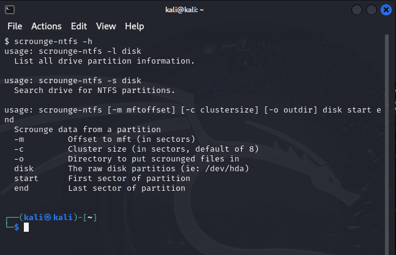
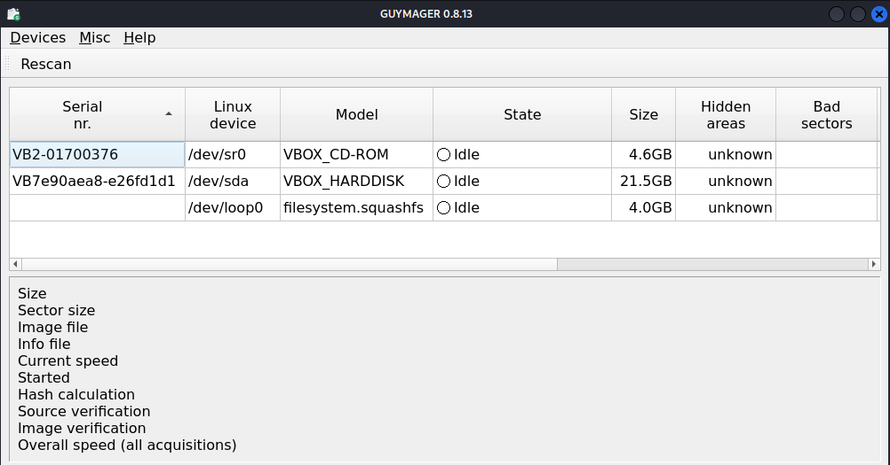
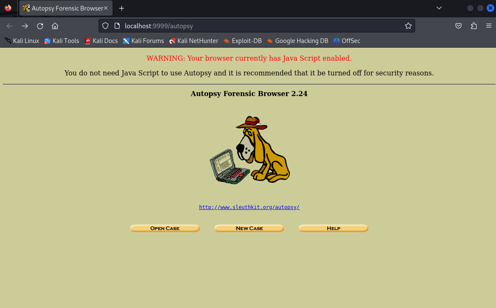
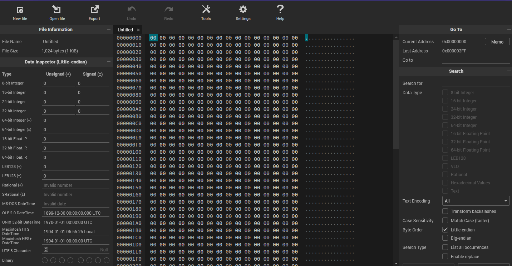
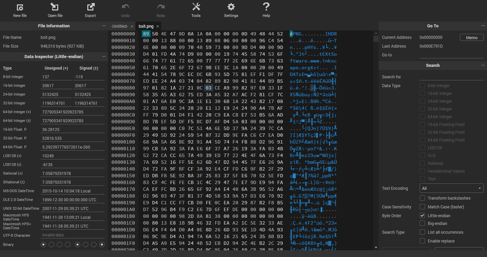
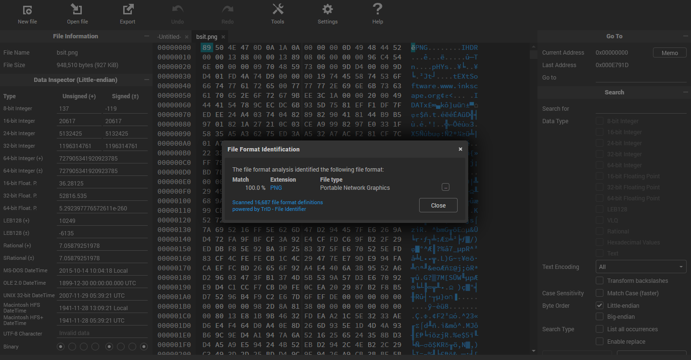

Kali Linux
for Cyberforensics


Use the navigation buttons or the arrow keys to proceed to the remaining slides.
F
You can also press > >F < < on your keyboard to show your presentation in fullscreen mode.
This presentation is best explored with up-to-date web browsers.
Forensic Carving
File carving is like piecing together a puzzle by recognizing and collecting specific patterns in a vast sea of data. It's a valuable technique for situations where traditional recovery methods fall short.
magicrescue
Forensic Carving
magicrescue
Magic Rescue scans a block device for file types it knows how to recover and calls an external program to extract them. It looks at “magic bytes” (file patterns) in file contents, so it can be used both as an undelete utility and for recovering a corrupted drive or partition. As long as the file data is there, it will find it.
Forensic Carving > magicrescue
Magic Rescue uses files called ‘recipes’. These files have strings and commands to identify and extract data from devices or forensics images. So, you can write your own recipes. Currently, there are the following recipes: avi, canon-cr2, elf, flac, gpl, gzip, jpeg-exif, jpeg-jfif, mbox, mbox-mozilla-inbox, mbox-mozilla-sent, mp3-id3v1, mp3-id3v2, msoffice, nikon-raw, perl, png, ppm, sqlite and zip.
Forensic Carving > magicrescue

scalpel
Forensic Carving
scalpel
scalpel is a fast file carver that reads a database of header and footer definitions and extracts matching files from a set of image files or raw device files.
Forensic Carving > scalpel
scalpel is filesystem-independent and will carve files from FAT16, FAT32, exFAT, NTFS, Ext2, Ext3, Ext4, JFS, XFS, ReiserFS, raw partitions, etc.
Forensic Carving > scalpel
scalpel is a complete rewrite of the Foremost 0.69 file carver and is useful for both digital forensics investigations and file recovery.
Forensic Carving > scalpel

scrounge-ntfs
Forensic Carving > scrounge-ntfs
scrounge-ntfs
Scrounge NTFS is a data recovery program for NTFS filesystems. It reads each block of the hard disk and try to rebuild the original filesystem tree into a directory.
Forensic Carving > scrounge-ntfs

Forensic Imaging
Process of making an exact copy of digital storage media for the purposes of preserving its contents and structure for later analysis.
guymager
Forensic Imaging > guymager
guymager
The forensic imager contained in this package, guymager, was designed to support different image file formats, to be most user-friendly and to run really fast. It has a high speed multi-threaded engine using parallel compression for best performance on multi-processor and hyper-threading machines.
Forensic Imaging > guymager

PDF Forensics
Aimed at analyzing PDF documents and extract deep information which is typically not visible to common users.
pdfid
PDF Forensics > pdfid
pdfid
This tool is not a PDF parser, but it will scan a file to look for certain PDF keywords, allowing you to identify PDF documents that contain (for example) JavaScript or execute an action when opened. PDFiD will also handle name obfuscation.
pdf-parser
PDF Forensics > pdf-parser
pdf-parser
This tool will parse a PDF document to identify the fundamental elements used in the analyzed file. It will not render a PDF document.
Sleuth Kit
The Sleuth Kit is a library and collection of Unix- and Windows-based utilities for extracting data from disk drives and other storage so as to facilitate the forensic analysis of computer systems
Autopsy
Sleuth Kit >autopsy
The Autopsy Forensic Browser is a graphical interface to the command line digital forensic analysis tools in The Sleuth Kit. Together, The Sleuth Kit and Autopsy provide many of the same features as commercial digital forensics tools for the analysis of Windows and UNIX file systems (NTFS, FAT, FFS, EXT2FS, and EXT3FS).
Sleuth Kit >autopsy
Essential Technical Concepts
Conducting a digital forensics investigation requires a thorough understanding of some of the main technical concepts of computing.
Computer Character Encoding Schema
Computers use character encoding schema to convert binary numbers into meaningful text that a human can read .
ASCII
Also known as American Standard Code for Information Interchange. ASCII codes represent text in computers, telecommunications equipment, and other devices. ASCII has just 128 code points, of which only 95 are printable characters, which severely limit its scope.
Unicode
Unicode encoding, created by The Unicode Consortium, is a widely used character-encoding schema that provides a unique number for every character from any international language.
Understanding how computers store and represent data is essential in digital forensics
File Structure
Digital files are composed of a sequence of bits: each file type has a particular encoding scheme (file format) that describes how information is stored within this file.
Revelation: Digital Concealment
As forensic investigators, one cannot depend on file extension alone. Most digital files have a signature that is located in the first 20 bytes of the file - you can check this signature by opening the subject file using a text editor.
A hex editor (https://hexed.it/)
File Contents
Investigation
Digital File Metadata
Metadata is data about data. Most digital file types have metadata associated with them.
Metadata Investigation
From a digital forensics perspective, metadata can be very useful in many cases. Example: Tracking different authors of a file (e.g., an MS Office file) through the associated metadata.
Hash Analysis
Hashing is an important concept in the digital forensic field; actually, you must calculate any digital evidence hash value (whether it is a hard disk image or a single file) you acquire during your investigation to prove that the acquired data (i.e., the digital evidence) has not been tampered with.
Volatile & Nonvolatile Memory
- Volatile memory keeps information for a short time; actually, it needs power to retain data, but when power is turned off, it loses its information quickly.
- Nonvolatile memory can retain data for long time, even after power is turned off. It is usually used for long-term persistent storage.
Types of Computer Storage
Primary Storage
Also known as main storage and system storage, this type has a volatile memory that loses stored data when power is turned off.
Secondary Storage
Secondary storage is also known as external memory or auxiliary memory. This is nonvolatile memory that retains its contents, whether there is power or not. It is used for long-term data retention.
Partition
A partition is a section on the disk. There are two types on partition for a disk: Primary and Extended - A primary partition will hold operating system booting files, while the extended partition, can be subdivided into 24 logical partitions; however, newer file systems can surpass the limit of 24 logical partitions.
File System Types
| Feature | NTFS | FAT32 | exFAT | EXT4 | APFS |
|---|---|---|---|---|---|
| Journaling | Yes | No | Yes | Yes | Yes |
| Large File Support | Yes | Limited (4GB) | Yes | Yes | Yes |
| Large Partition Support | Yes | Limited (32GB) | Yes | Yes | Yes |
| Security Features | Yes (ACLs) | No | Limited | Yes (ACLs) | Yes (ACLs) |
| Compression | Yes | No | No | Yes | Yes |
| Encryption | Yes | No | No | Yes | Yes |
| Fragmentation Resistance | Good | Poor | Good | Good | Good |
| Performance | Good | Fair | Good | Good | Excellent |
| Compatibility | Primarily Windows | Windows, macOS, Linux | Windows, macOS, Linux | Primarily Linux | Primarily macOS |
Common File Systems and Their Meanings
| File System | Platform | Key Features |
|---|---|---|
| NTFS (New Technology File System) | Windows | Robust, supports encryption, compression, and access control lists (ACLs) |
| FAT32 (File Allocation Table 32) | Windows, macOS, Linux | Simple, compatible, but limited in file and partition size |
| exFAT (Extended File Allocation Table) | Windows, macOS, Linux | Supports larger files and partitions, good for external storage |
| APFS (Apple File System) | macOS | High performance, encryption, snapshots, and space sharing |
| ext4 (Fourth Extended File System) | Linux | Supports large files, journaling, encryption, and compression |
| XFS (X Filesystem) | Linux | High-performance file system for large file systems and heavy workloads |
Data Measurement Units
| Unit | Symbol | Equivalent |
|---|---|---|
| Bit | b | Binary digit (0 or 1) |
| Byte | B | 8 bits |
| Kilobyte | KB | 1024 bytes (approximately 1000 bytes) |
| Megabyte | MB | 1024 kilobytes (approximately 1 million bytes) |
| Gigabyte | GB | 1024 megabytes (approximately 1 billion bytes) |
| Terabyte | TB | 1024 gigabytes (approximately 1 trillion bytes) |
| Petabyte | PB | 1024 terabytes (approximately 1 quadrillion bytes) |
| Exabyte | EB | 1024 petabytes (approximately 1 quintillion bytes) |
| Zettabyte | ZB | 1024 exabytes (approximately 1 sextillion bytes) |
| Yottabyte | YB | 1024 zettabytes (approximately 1 septillion bytes) |
Data Recovery Considerations
Recovering data from SSD is more difficult than it is from HDD, and sometimes it is not possible at all. For instance, when you delete a file on an HDD, the subject file data will not get deleted immediately; instead, the HDD will only delete the pointer to this file, marking its space on the disk as free. The subject file data will get deleted only when the operating system needs to write new data on its location.
The SSD uses a different mechanism to handle deleted files; for instance, when a user deletes a file, the SSD will utilize the TRIM command, which works to delete a subject file instantly, leaving its location free for another file to occupy. Each operating system type implements the TRIM command differently: some OS will execute it immediately after a user deletes a file, while others will execute it at regular intervals
Thank You!
This presentation is made of and HTML 5